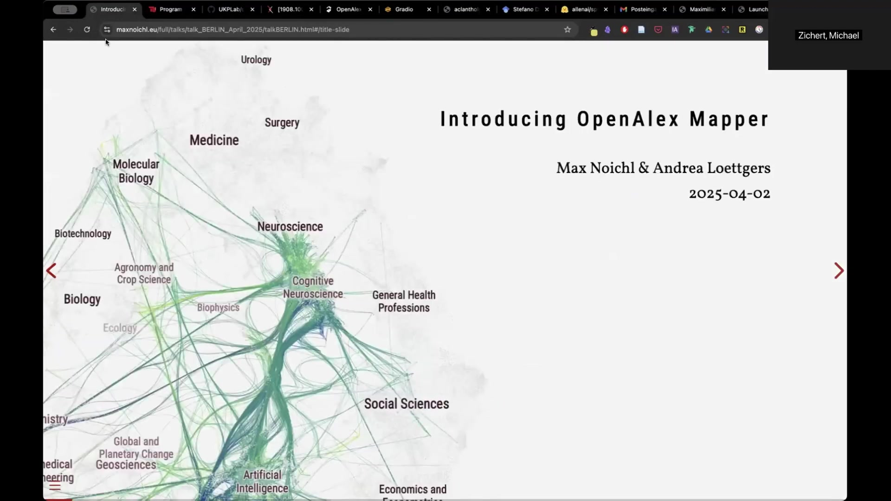
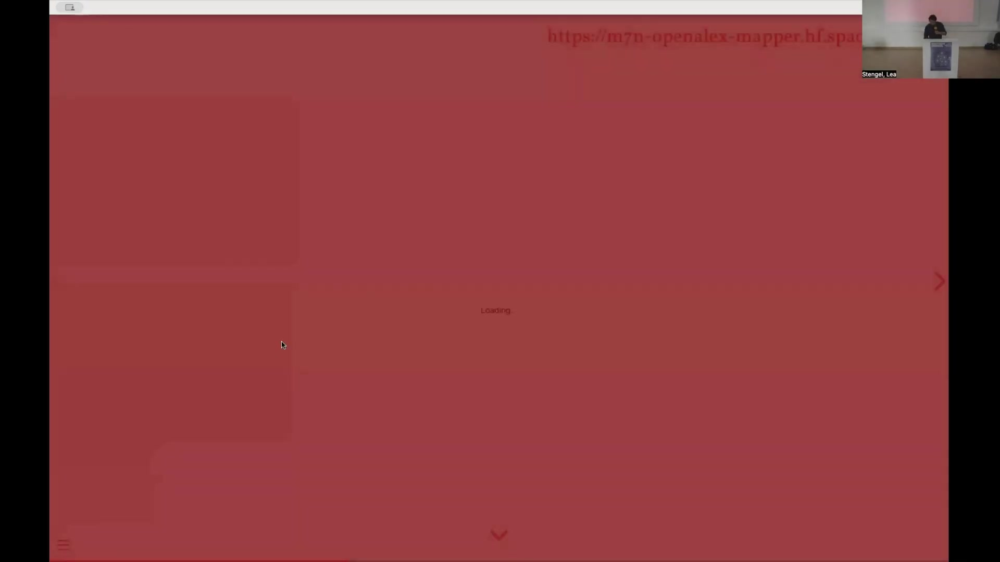
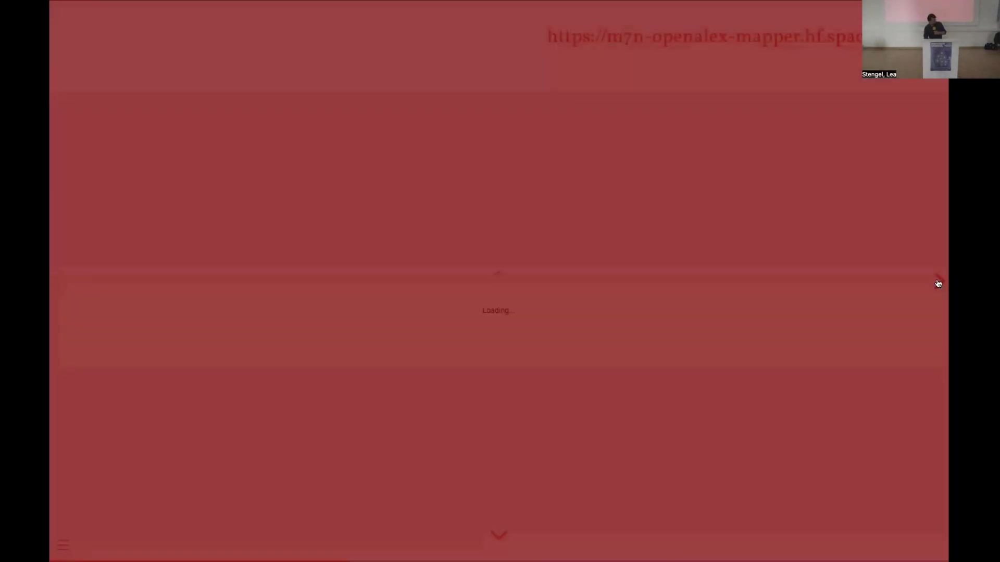
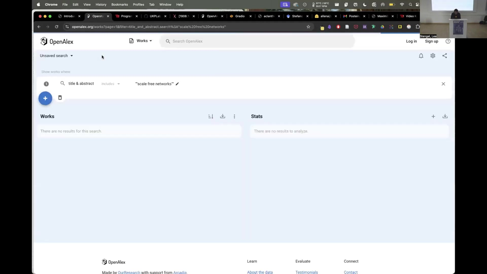
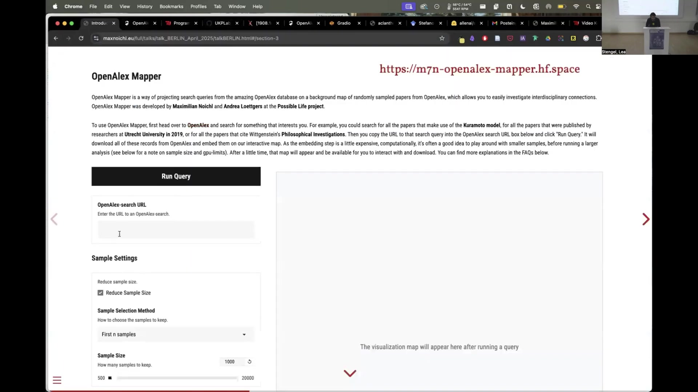
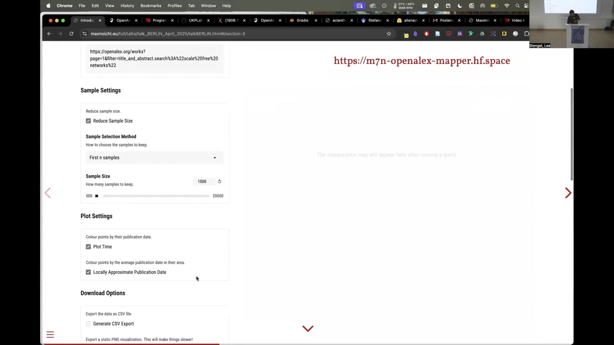

4 The Workflow and Utility of OpenAlex Mapper
Overview
OpenAlex Mapper facilitates the exploration of scholarly literature by projecting search queries from the OpenAlex database onto a pre-computed base-map of scientific articles. The underlying workflow encompasses three principal stages. Initially, an embedding model, Specter 2 (Singh2022?), undergoes fine-tuning to enhance its ability to distinguish between academic disciplines. Subsequently, a base-map materialises from a random sample of 300,000 articles drawn from OpenAlex; their abstracts are embedded and then projected into a two-dimensional space using Uniform Manifold Approximation and Projection (UMAP) (McInnes2018?). This process yields both the visual base-map and a trained UMAP model. Finally, for an individual user query, the system retrieves relevant records from OpenAlex, embeds their abstracts using the fine-tuned Specter 2 model, and projects these new embeddings onto the existing base-map via the trained UMAP model. The outcome is an interactive map, accessible online, which visually situates the user’s query results within the broader landscape of science.
4.1 Introduction to OpenAlex Mapper
Researchers at Utrecht University and the University of Vienna developed OpenAlex Mapper, a tool designed to navigate and analyse the vast expanse of scholarly communication. Maximilian Noichl, in collaboration with Andrea Loettgers and Taya Knuuttila, spearheaded this initiative, which received support from an ERC grant focused on ‘Possible Life’. The tool offers an interactive platform for investigating interdisciplinary connections and the topical distribution of research. Users can access the slides accompanying this work and interact with the tool itself via the developer’s website (maxnoichl.eu/talk), allowing for a direct engagement with its capabilities. This chapter elucidates the technical underpinnings of OpenAlex Mapper, demonstrates its practical application, and explores its potential contributions to research in the History, Philosophy, and Sociology of Science (HPSS).

4.2 Technical Architecture of OpenAlex Mapper
The operational framework of OpenAlex Mapper integrates several sophisticated computational techniques to generate its insightful visualisations. Its construction involved a multi-step process, beginning with model refinement and culminating in a system for dynamic query projection.

4.2.1 Fine-tuning the Embedding Model
The initial phase concentrated on refining a language model to better capture the nuances of disciplinary distinctions. Investigators selected Specter 2 (Singh2022?), a language model adept at generating embeddings for scientific documents. They fine-tuned this model using a dataset of articles from closely related disciplinary backgrounds. This procedure trained the model to distinguish more effectively between these proximate fields, thereby improving its sensitivity to disciplinary boundaries. Visualisations produced through UMAP dimensionality reduction during this training process confirmed the enhanced separation of disciplines. These adjustments to the language model were incremental, rather than a complete retraining, yet crucial for the subsequent mapping accuracy.
4.2.2 Base-map Preparation
Following the model refinement, attention turned towards constructing the foundational map of scientific literature. For this, researchers utilised the OpenAlex database, a comprehensive and openly accessible repository of scholarly material that surpasses Web of Science and Scopus in its inclusiveness and ease of batch querying. From OpenAlex, they randomly sampled 300,000 article abstracts. These abstracts were then processed using the fine-tuned Specter 2 model to generate high-dimensional embeddings.
Subsequently, Uniform Manifold Approximation and Projection (UMAP) (McInnes2018?) served to reduce these embeddings from their high-dimensional space to a two-dimensional representation. This projection formed the ‘base-map’, a visual landscape of scientific research. Crucially, the UMAP model trained during this stage was preserved for later use.
4.2.3 Processing Individual User Queries
OpenAlex Mapper empowers users to explore this base-map with their own research questions. An individual can submit an arbitrary OpenAlex search query, typically as a URL. The tool then downloads the corresponding records from OpenAlex, often employing PyAlex for this task. It proceeds to embed the abstracts of these retrieved documents using the same fine-tuned Specter 2 model employed for the base-map.
The core of the dynamic mapping lies in the next step: the newly generated embeddings are projected into the two-dimensional space using the previously trained UMAP model. This ensures that the queried articles are positioned on the map as if they had been part of the original layout process. UMAP’s architecture facilitates this projection of new data onto an existing embedding. The final output is an interactive map, available online and for download via data-mapplot, where the user’s query results appear highlighted against the backdrop of the broader scientific landscape.
4.3 Utilising OpenAlex Mapper: A Practical Guide
Engaging with OpenAlex Mapper is a relatively straightforward process, designed to be accessible for researchers seeking to explore interdisciplinary connections. The tool is available online at https://m7n-openalex-mapper.hf.space.

The primary workflow involves these steps:
Navigate to the OpenAlex website (openalex.org).
Conduct a search for a topic, author, institution, or any other entity of interest, utilising the full search capabilities of OpenAlex. For instance, one might search for papers discussing “scale-free network models”, articles published by a specific university in a given year, or publications citing a particular seminal work.
Once the search results appear, copy the URL from the browser’s address bar. This URL encapsulates the precise query.
Return to the OpenAlex Mapper interface and paste this URL into the designated “OpenAlex-search URL” input field.
Adjust sample settings if necessary. Given that embedding abstracts can be computationally intensive, particularly for large result sets, users can opt to reduce the sample size. Options include selecting the first ‘n’ samples or other sampling methods.
Configure plot settings, such as choosing to colour points by publication date or displaying the citation graph over the map.
Click the “Run Query” button.
Behind the scenes, OpenAlex Mapper then downloads the specified records from OpenAlex. It embeds the abstracts of these documents and projects them onto the base-map. After a processing period, the interactive visualisation appears, allowing users to explore where their query results cluster and how they relate to different regions of the scientific map.

The tool provides immediate visual feedback on the distribution of the queried literature. For example, a search for “coriander” might reveal its presence not only in expected fields like botany or food science but also in unexpected areas such as epidemiology or public health, prompting further investigation into these connections. Similarly, mapping publications on “scale-free network models” can illustrate their prevalence and application across diverse scientific domains.

4.4 Applications in the History, Philosophy, and Sociology of Science (HPSS)
OpenAlex Mapper offers a valuable methodological addition to the toolkit of HPSS researchers. It aims to help bridge the gap between detailed, qualitative case studies and the broader, large-scale dynamics of contemporary science. Many insights in HPSS derive from close-up views of specific scientific episodes, often based on close reading of texts, interaction with scientists, or ethnographic methods. Whilst these studies provide rich understanding, generalising their findings or validating them in the context of global, rapidly evolving “big science” presents a considerable challenge.
The tool assists in addressing questions about the reach, influence, and contextual embedding of scientific ideas, models, and methods. For instance, one might ask: Where did the Hopfield Model, developed in a specific context, truly gain traction and find lasting application across the sciences? OpenAlex Mapper allows for such heuristic, qualitative investigations to be supported and guided by quantitative, large-scale data analysis, whilst always enabling a return to the underlying textual sources.
4.4.1 Investigating Model Templates
Researchers initially developed OpenAlex Mapper with the study of ‘model templates’ in mind. In the philosophy of science, model templates refer to abstract structural forms of models that recur across diverse scientific disciplines, potentially structuring scientific inquiry in ways orthogonal to traditional disciplinary boundaries. Using the tool, investigators can map the occurrence of specific model templates—such as percolation models, network models, or agent-based models—revealing their distinct, sometimes non-continuous, footprints across the scientific landscape. This visualisation can illuminate how similar formalisms are adopted and adapted in varied epistemic contexts.
4.4.2 Mapping Conceptual Landscapes
The tool also proves useful for exploring the distribution and interrelation of scientific concepts. For example, one can map the concept of ‘phase transition’ and contrast its disciplinary spread with that of ‘emergence’. Whilst conceptual mapping is an established practice, OpenAlex Mapper extends this capability to broad interdisciplinary contexts, overcoming common difficulties associated with acquiring and harmonising diverse datasets. It allows researchers to visualise how concepts travel, transform, and are contested across different fields.
4.4.3 Analysing Methodological Distributions
A further application lies in examining the distribution of specific research methods. Consider the ongoing debate in philosophy of science regarding the role of machine learning techniques versus classical statistical methods in scientific discovery. OpenAlex Mapper can map the usage of a machine learning technique like the random forest model against a more traditional method such as logistic regression. Observing distinct patterns in their disciplinary uptake—for instance, why neuroscientists might favour random forests whilst psychiatric researchers predominantly use logistic regressions for thematically similar problems—can generate new philosophical questions about methodological choice, epistemic justification, and disciplinary cultures.
4.5 Methodological Considerations and Limitations
Whilst OpenAlex Mapper offers powerful analytical capabilities, several qualifications warrant attention.

A list of these considerations includes:
- Data Source Imperfections: The utility of the tool is intrinsically linked to the comprehensiveness and accuracy of the OpenAlex database. Although data quality is generally reasonable, and comparable to other major bibliographic databases, it is not flawless. Users must remain mindful of potential biases or gaps in the underlying data.
- Language Limitations: Currently, the fine-tuned Specter 2 model employed by OpenAlex Mapper processes only English-language texts. This inherently limits the scope of analysis, particularly for research published in other languages or for historical periods where English was less dominant in scientific communication. Future developments could incorporate multilingual models to address this, although high-quality, science-trained multilingual models are not yet widely available.
- Dependency on Abstracts and Titles: The embedding process relies on the availability of abstracts or, at a minimum, informative titles. Sources lacking such textual information cannot be effectively processed or mapped, potentially excluding certain types of publications or older literature.
- UMAP Algorithm Characteristics: The UMAP algorithm, central to the dimensionality reduction and visualisation, possesses certain characteristics that influence the output.
- Stochasticity: UMAP is a stochastic algorithm, meaning that each run can produce slightly different layouts. The generated map represents one realisation amongst many possibilities.
- Dimensionality Trade-offs: Projecting high-dimensional data (such as the 768 dimensions of Specter embeddings) into a mere two dimensions inevitably involves trade-offs and potential distortions. The algorithm must prioritise certain relationships, which can lead to some misalignments or compressions of the true semantic distances between documents.
A working paper, “Philosophy at Scale: Introducing OpenAlex Mapper,” provides a more detailed exposition of the technical aspects and further discusses these methodological points.
4.6 Conclusion
OpenAlex Mapper represents a novel approach to navigating and understanding the complex, interconnected web of scientific knowledge. By combining advanced language models with powerful dimensionality reduction techniques, it provides researchers, particularly within HPSS, with an interactive means to explore the distribution of concepts, methods, and intellectual traditions across diverse disciplinary landscapes. Its capacity to ground large-scale visualisations in specific textual sources offers a promising avenue for integrating qualitative insights with quantitative analyses, thereby enriching our understanding of how science operates and evolves. Despite certain limitations inherent in its data sources and algorithms, the tool furnishes a dynamic platform for heuristic investigation and the generation of new research questions about the structure and dynamics of scholarly communication.